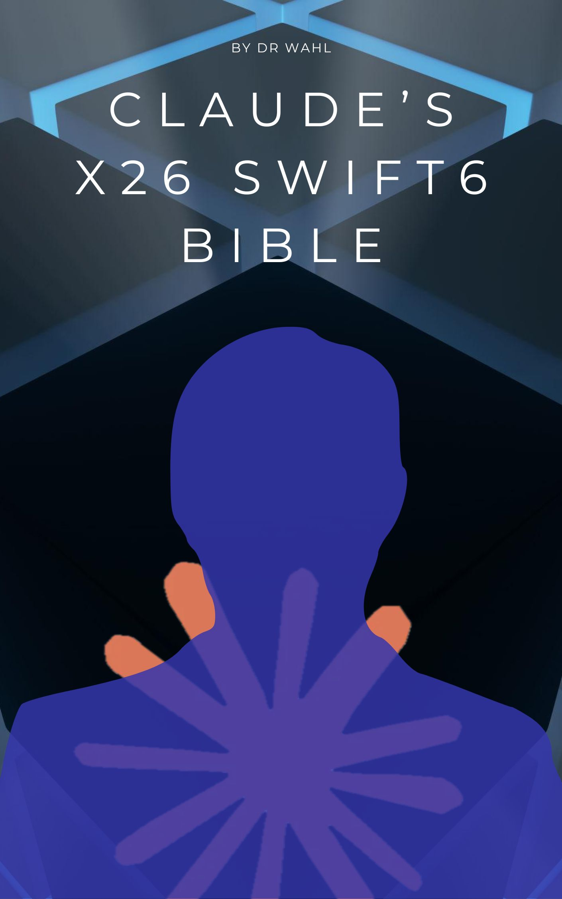

Claude's X26 Swift6 Bible
Learn iOS development by building real App Store apps
Book Swift 6 Xcode 26 FreeAbout
Claude's X26 Swift6 Bible teaches iOS, iPadOS, macOS, and tvOS development through real apps that ship to the App Store. No hypothetical exercises. Every example is a working app you can download, run, and study.
The book covers SwiftUI, SwiftData, MusicKit, WeatherKit, WidgetKit, App Groups, App Store submission, and the full lifecycle from empty Xcode project to published app. Each chapter builds on the last, and every companion app includes an Under the Hood tab where you can browse and copy the source code directly from your phone.
Written by Dr. Wahl (Michael Lee Fluharty) and Claude A. (Anthropic).
What You'll Learn
SwiftUI
Views, navigation, text input, alerts, sheets, TabView, NavigationSplitView
SwiftData
Data persistence, @Model, @Query, ModelContainer, App Group shared stores
WidgetKit
Home screen widgets with timeline providers and shared data
App Store Submission
Archive, validate, upload, App Store Connect, handling rejections
UIKit Bridging
UIViewRepresentable, WKWebView, UIImagePickerController, MFMailComposeViewController
Git & GitHub
Version control, remote repos, branching, collaboration
Table of Contents
Part I: Introduction
- Chapter 1: Introducing Swift & Xcode
- Chapter 2: Introducing SwiftUI Views
- Chapter 3: Introducing Scenes & Windows
Part II: The User Interface
- Chapter 4: UI Components
- Chapter 5: Lists & Grids
- Chapter 6: Images & SF Symbols
- Chapter 7: Navigation
- Chapter 8: Sheets & Alerts
- Chapter 9: Text Input
- Chapter 10: Pickers & Toggles
- Chapter 11: FileManager & Documents
- Chapter 12: Communication
Part III: The Application
- Chapter 13: Multi-Window Apps
- Chapter 14: Clipboard & Drag-Drop
- Chapter 15: Data Persistence
- Chapter 16: Extensions
- Chapter 17: Charts
Part IV: Advanced Techniques
- Chapter 18: Error Handling
- Chapter 19: Custom Views
- Chapter 20: Performance Optimization
Part V: The Modern Toolchain
- Chapter 21: Git & GitHub
- Chapter 22: AI Chatbot Integration
Companion Apps
Every companion app ships to the App Store with the same template: the core feature, Under the Hood source code browser with one-tap copy, and Contact Developer feedback form.
QuickNote by Claude
Live on App Store
Notes with photo attachments, camera capture, and a home screen widget. Teaches SwiftData, App Groups, WidgetKit, and PhotosPicker.
App StoreWraply
In Development
Web browser with bookmarks, share sheet, and kiosk mode. Teaches WKWebView, UIViewRepresentable, SwiftData persistence, and SF Symbols.
Real App Store Apps as Examples
The book references real, published apps throughout its chapters:
CryoTunes Player
Live on App Store
Retro music player with 80+ stations. MusicKit, WeatherKit, shared Swift packages.
Tally Matrix Clock
Live on App Store
tvOS digital clock. Scene lifecycle, focus system, Apple TV development.
Technical Details
Authors: Dr. Wahl (Michael Lee Fluharty, AS CEEET) & Claude A. (Anthropic)
Price: Free
License: GPL v3 — Share and share alike with attribution required